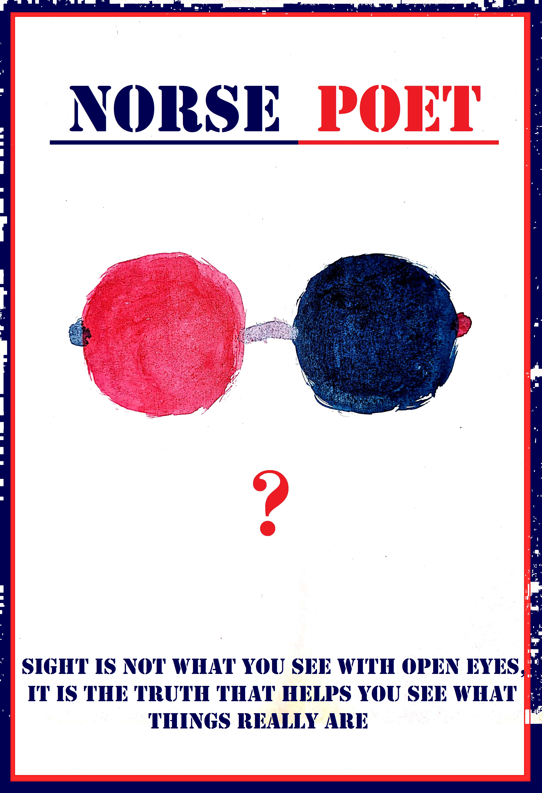

Human likes to feel what sorround them. They think that the universe is moving in circle and they are the center of it. It's not wrong to feel like that. After all, we are the protragonist of our own story. The subject in these stories we are interested in is, the one which make us think further and we pass our time revolving that thought. We face situations and those situations lead us to a path. A path where the subject becomes the principle, the intention becomes the meaning, the dream becomes the distance and the desire becomes the goal. It's not like that the path is driving us to walk on it. We follow the path on our own thinking that we can achieve our desire. But if someone says that they took decision without any thought or wanted to see what will happen after it, it's not surprising at all. Because in the end, we are humans who doesn't know what await the next moment for us. In somewhere middle of running in this path, searching for the subject and following the desire, we get lost. The world big indeed, it's just our eyes that make it look on boundary. I , the Norse Poets don't pity those souls who are tired, lost , searching for answer and searching for meaning. So, for them who want a little push on the back, Norse Poet will try to give you your answers in words,in poems,in riddles or in meaning.

Poster of Norse Poet
If anyone interested to know about the authors who share their thoughts and creation with us, please visit this page and get to know them.
About Norse Poet
Norse Poet is a symbol of balance. It's not about religion or about the norse mythology. I the Norse Poet, here to tell you my poems,my words and my stories. I am here to share my realization,my thoughts. Everything is beautiful and everything is ugly too. It is us who choose to see what we meant to see. If I can help someone see the beauty, the glory, the truth then I will find meaning in my words and letters.
Thank you
Those who are interested to be part of Norse Poet's community and share their thoughts & creation with us, please visit this page and write down your poems , writings and feelings. Here, you can also discuss about different kind of topics.
N.B.: If any author or poet wants to publish their poems, writings or stories , you are always WELCOME!!!. You just have to contact Norse Poet